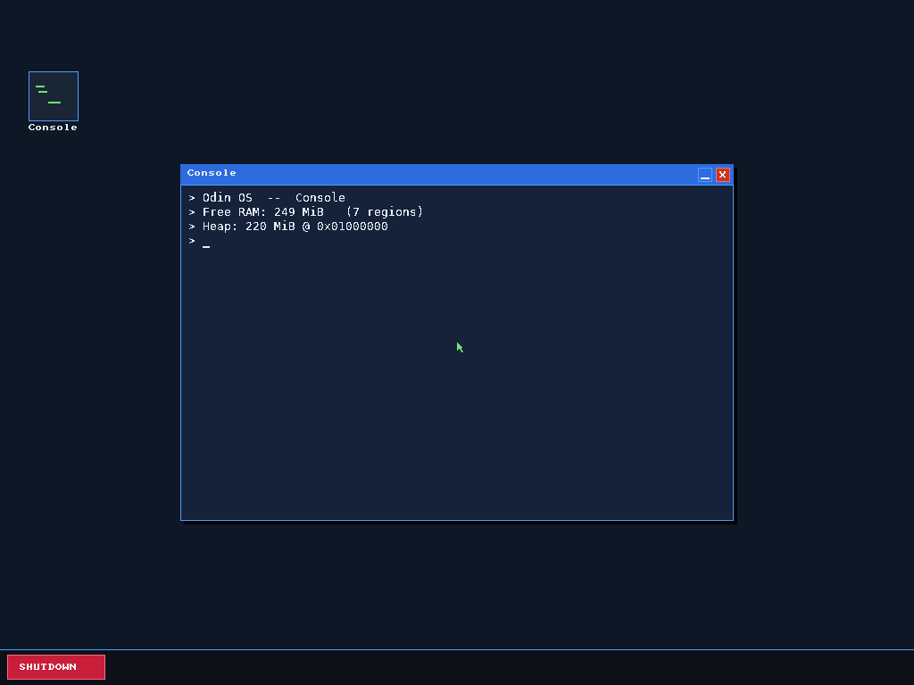
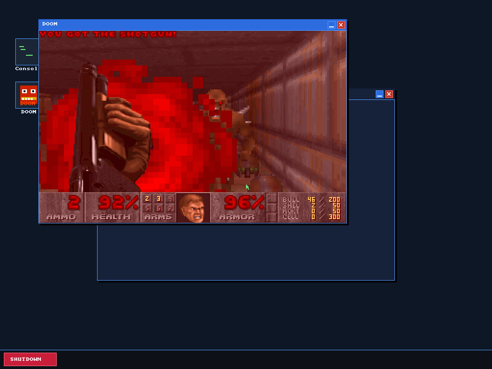

Levente Péter Csontos
Computer engineering student at BME. I build backend services in Java and Kotlin, and I wrote an x86_64 operating system from scratch.
Available for an internship, starting immediately.
The windows on this page are drawn the way Odin OS draws them. That is the operating system I wrote, and it comes first below.
Console
> Odin OS -- Console
> Degree: Computer Engineering BSc, BME
> Graduates: December 2027
> Based in: Budapest, Hungary
> Speaks: Hungarian, English (C1)
> Looking: backend or embedded internship
> _
odin_based_os
Odin OS, an x86_64 operating system written from scratch
It boots under both BIOS and UEFI from one ISO, switches to 64-bit long mode and draws a graphical desktop on a real 1024x768 framebuffer.
- Double-buffered software renderer
- Window system with draggable windows, a taskbar and a text console
- PS/2 keyboard and mouse drivers (i8042)
- PIC-remapped interrupts with an IDT, and a PIT timer
- ACPI shutdown

The desktop, console window and taskbar, booted under UEFI.
The boot path, in the order it runs
-
1
GRUB
Loads the kernel through Multiboot2, on BIOS or UEFI firmware.
-
2
header.asm
Multiboot2 header and the framebuffer request.
-
3
main.asm
32-bit entry: CPU checks, paging for the first 4 GiB, switch to long mode.
-
4
main64.asm
64-bit entry: SSE, IDT, then the call into the Odin kernel.
-
5
kernel.odin
Kernel entry point and main loop: drivers, renderer, windows.

DOOM in a window on Odin OS.
An earlier build ran DOOM
I ported DOOM (doomgeneric) to run in a window. The game data loads from RAM as a GRUB module, so it needs no filesystem.
DOOM has since been removed from the current build. The screenshot is kept to show that it worked.
java_dashboard
Dashboard backend
- Stateless authentication API with registration, email verification and JWT access tokens.
- Refresh tokens live in Redis for 7 days, so they can be revoked on logout.
- Mockito unit tests, MockMvc controller tests, and Testcontainers integration tests against real PostgreSQL and Redis.
kotlin_backend
Chat application backend
- Registration and login with JWT and BCrypt password hashing, in a layered structure: routes, repository, service, database.
- Per-IP rate limiting at 10 requests a minute on the auth endpoints.
- Profile links with random 50-character slugs.
More projects
LLMs-and-tools
GPT-style language model from scratch
A decoder-only transformer, trained for 4 to 5 days on a 92 MB corpus of more than 300 books, then fine-tuned to follow instructions.
Arduino tank
Bluetooth-controlled Arduino tank
I designed the electronics and wrote the Arduino Nano control firmware for a model tank driven over Bluetooth. A partner built the mechanics.
C++, Arduino Nano, Bluetooth, electronics
More on GitHub
Skills
Languages
Java, Kotlin, C, C++, C#, Python, Odin, x86 assembly (NASM)
Backend
Spring Boot, Spring Security, Spring Data JPA, Ktor, JUnit 5, Mockito, Testcontainers
PostgreSQL, MySQL, Redis
Low-level
x86_64 boot, paging, interrupts (IDT, PIC, PIT), PS/2 drivers, ACPI, Multiboot2, linker scripts
Arduino Nano, Bluetooth, basic electronics
Tools
Git, Linux, Docker Compose, Gradle, Swagger (OpenAPI), CMake, Make, GCC, NASM, QEMU, GRUB
Education
Studies
-
BSc in Computer Engineering, Budapest University of Technology and Economics
Expected December 2027
-
Szilágyi Erzsébet High School, Eger, mathematics and informatics track
2020 to 2024
Outside the code
- 1st place, Mátrai Tibor county physics competition
- 2nd place, county team chess (Student Olympics)
- Hungarian (native), English (C1, complex language exam)